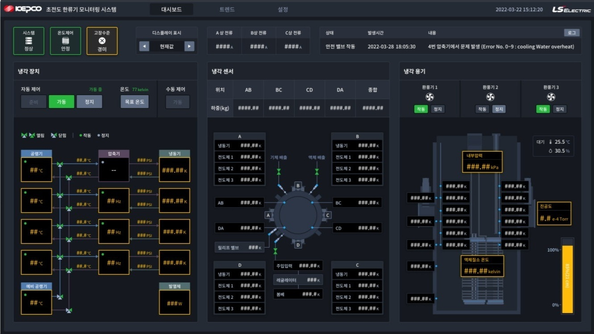

LS-한전 Gridsol SCADA
초전도 한류기 프로젝트에서 HMI 작화, 자동 운전 시스템 구축, 현장 기술 지원까지 담당하며 운영 안정성을 높인 경력입니다.

Overview
LS GridSol SCADA 기반 초전도 한류기 프로젝트에서 HMI 작화, 자동 운전 시스템 구축, 현장 기술 지원을 담당했습니다.
개발 프로젝트와 별개로 실제 운영 환경에서 장애 대응과 안정화 경험을 쌓았고, 현장의 문제를 시스템 개선으로 연결하는 관점을 익혔습니다.
My Role
- LS GridSol SCADA 기반 HMI 작화와 자동 운전 시스템 구축을 담당했습니다.
- 매뉴얼에 없는 실시간 트렌드 그래프 기능을 스크립트 분석과 시뮬레이션을 통해 직접 구현했습니다.
- 보안이 엄격한 고객 환경에서 야간 및 원격 기술 지원을 수행하며 시스템 장애 대응과 운영 안정화 경험을 축적했습니다.
Problem & Solution
운영 현장에서는 단순히 화면이 보이는 것보다 설비 상태를 빠르게 파악하고 이상 징후를 놓치지 않는 것이 중요했습니다. 특히 매뉴얼에 없는 기능이 필요할 때는 기존 도구 안에서 가능한 구현 방식을 찾아야 했습니다.
스크립트 동작을 분석하고 시뮬레이션으로 검증하면서 실시간 트렌드 그래프 기능을 구현했고, 이를 통해 운영자가 변화 흐름을 더 쉽게 확인할 수 있도록 모니터링 가시성을 개선했습니다.
Result
자동 운전 시스템과 모니터링 화면을 구축하며 운영 안정성 향상에 기여했습니다. 또한 보안이 엄격한 고객 환경에서 장애 대응과 원격 지원을 경험하며, 실제 운영 조건을 고려한 시스템 구축의 중요성을 체감했습니다.